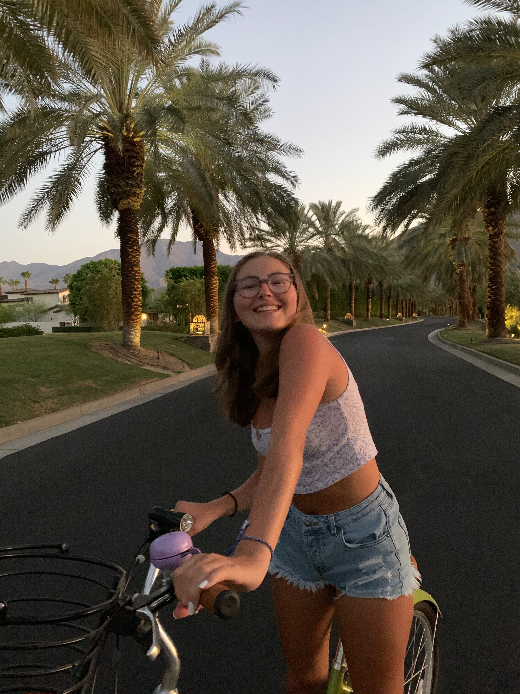
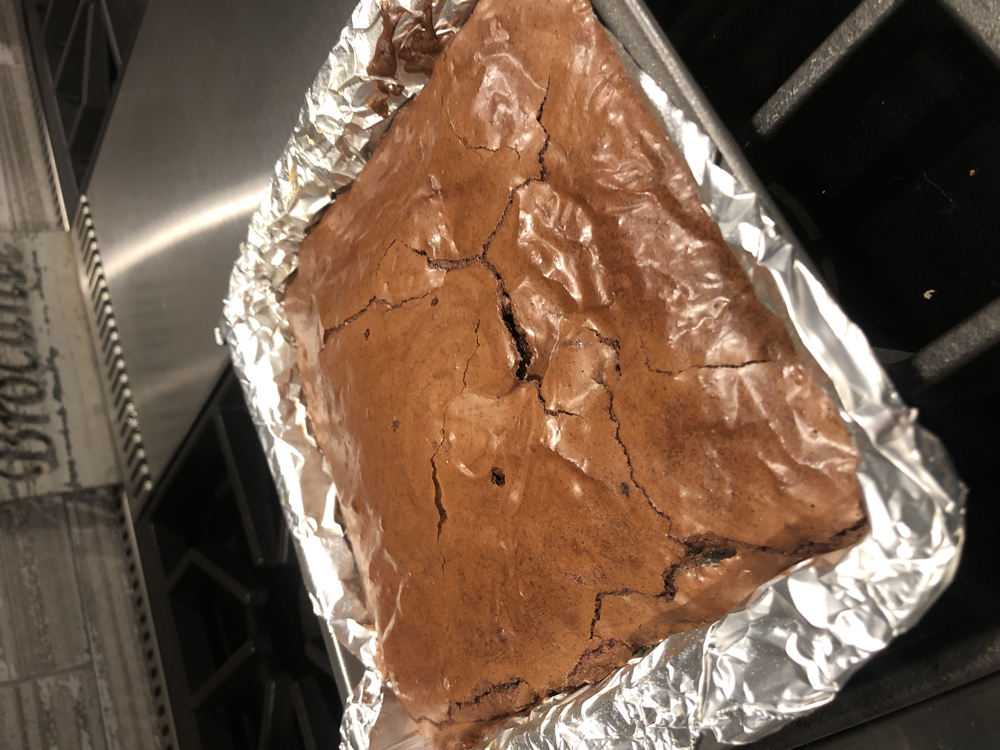
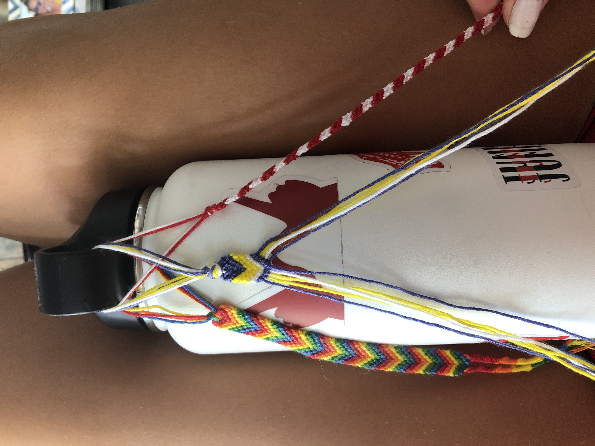
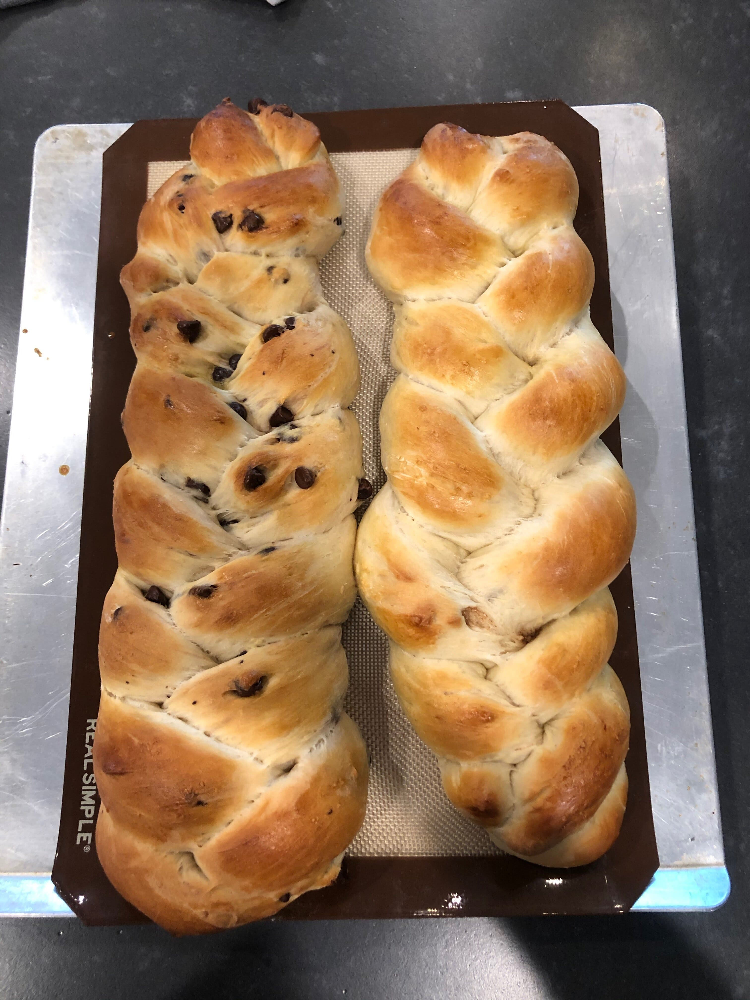

Over quarantine, I did and tried many new things. The first thing I did was swim a lot. I spent a lot of time in the sun playing with my dog Rocky. I spent a lot of time baking as well. Below you will find many images of the food items I made over those few months. I also spent a bit of time making friendship bracelets for my family and friends. I spent time biking around my neighborhood as well. Overall, I enjoyed getting the chance to try so many new things.
   